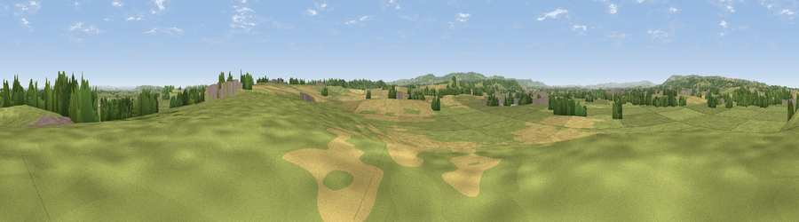

Viewpoint near Knapp
#34203 in England · top 83% of its area beats it · near KnappWhere it is
The exact computed spot (ST 29675 25475). Click the marker for map links.
The view, rendered

A 360° render of this exact spot computed from the terrain model, tree cover and land cover — summer colours, afternoon light, calibrated against photographs of famous viewpoints. Real trees, hedges and buildings will differ in detail.
The panorama
Grey silhouette: terrain skyline in each direction (720 bearings, Earth curvature and refraction included). Dashed green: skyline with trees (+15 m) and buildings (+8 m) as obstacles. Blue strip: how far the ground is visible on each bearing.
Where the view opens
Wedge length = distance to the farthest visible ground on that bearing (vegetation-aware). Rings at 10, 25 and 50 km.
What fills the view
60% grassland · 31% cropland · 8% woodland · 2% built-up
Angular shares of the visible panorama (visual magnitude), not map area. Landscape diversity 0.41 (0–1 Shannon).
Key numbers
More beautiful places nearby
The staircase of upgrades: each row has a higher view potential than everything closer. Driving times are estimates from straight-line distance, calibrated against real road routing — check an actual route before setting out.
| Place | Direction | Drive | Score |
|---|---|---|---|
| Thorn Hill | SSW · 2 km | ~6 min | 62.0 |
| Viewpoint near Stoke St Mary | SW · 4 km | ~9 min | 66.3 |
| Viewpoint near Curry Mallet | SE · 4 km | ~10 min | 68.0 |
| Viewpoint near North Petherton | NNW · 7 km | ~15 min | 71.2 |
| Viewpoint near Thurloxton | NNW · 8 km | ~16 min | 73.3 |
| Kingston Beacon | NW · 8 km | ~17 min | 74.0 |
| Viewpoint near Broomfield | NW · 10 km | ~19 min | 76.0 |
| Viewpoint near Buckland St. Mary | SSW · 10 km | ~19 min | 77.3 |
51.02433, -3.00410 · source: screening · position refined by local search. Computed location — check access rights before visiting.